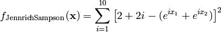
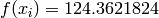
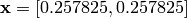
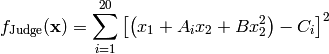
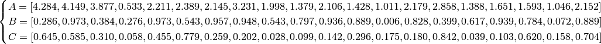
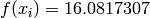
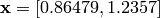

N-D Test Functions J¶
N-D Test Functions J¶Jennrich-Sampson test objective function.
This class defines the Jennrich-Sampson global optimization problem. This is a multimodal minimization problem defined as follows:

Here,  represents the number of dimensions and
represents the number of dimensions and ![x_i \in [-1, 1]](_images/math/69d20098894c45659a72bd07f85a904ff6726b1e.png) for
for  .
.
Two-dimensional Jennrich-Sampson function
Global optimum:  for .
Judge test objective function.
This class defines the Judge global optimization problem. This is a multimodal minimization problem defined as follows:

Where, in this exercise:

Here, represents the number of dimensions and ![x_i \in [-10, 10]](_images/math/d511ca3206c16bae3e3af3c02835f3fe9fb07286.png) for .
for .

Two-dimensional Judge function
Global optimum:  for .